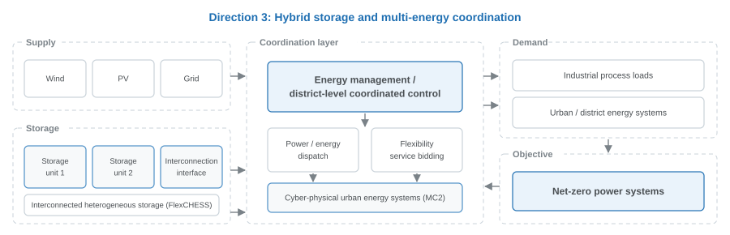
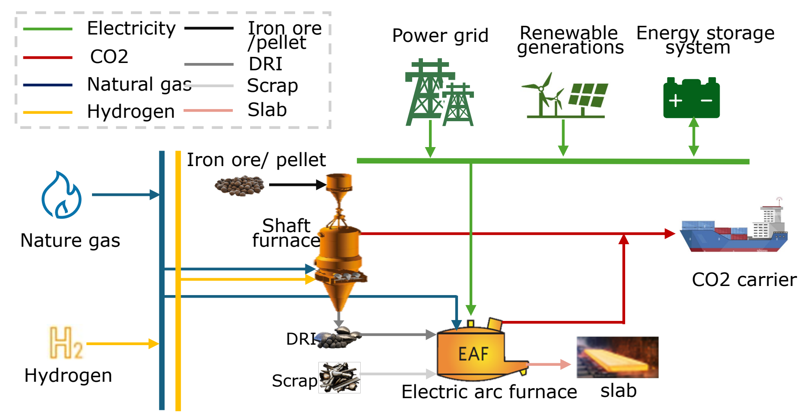
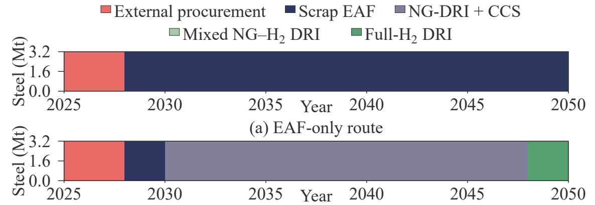
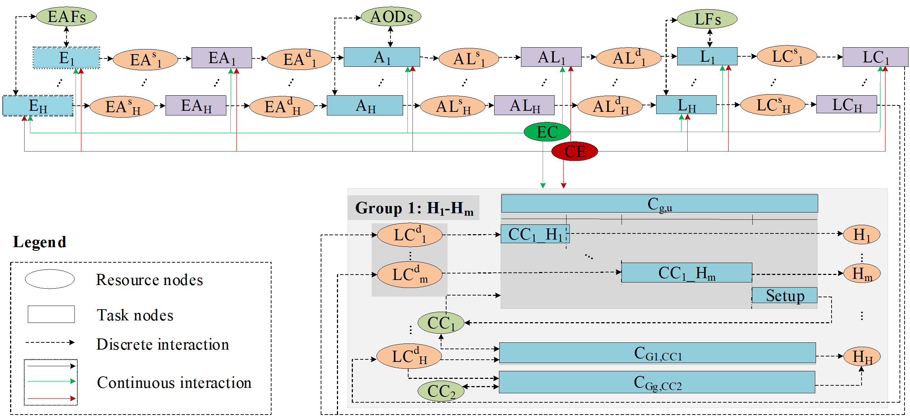

Research
Research Interests
His research addresses the coordinated optimisation of industrial process flexibility and low-carbon power systems. Main topics are multi-objective scheduling of steelmaking processes, industrial load flexibility assessment and demand response, hybrid energy storage systems and flexibility services, and multi-energy coordination for net-zero power systems. A central thread is electrified steelmaking in renewable-rich power systems: determining transition pathways and investment at the planning level, and coordinating electric arc furnaces, electrolysers and storage at the scheduling level so that steel production becomes a flexibility resource for the grid. Along this thread, one line of work addresses electric arc furnace steelmaking by bringing electricity cost, indirect emissions and order processing time requirements into a single multi-objective optimisation; another addresses hydrogen-based steel plants by bringing the coupled operation of electrolysis, hydrogen storage, shaft-furnace direct reduction and the EAF into short-term scheduling, improving economics through operation rather than additional equipment.
Keywords: industrial load flexibility · steelmaking process scheduling · hybrid energy storage and demand response · multi-energy system coordination
Research at a Glance
Research Framework
The work takes industrial processes (chiefly electric arc furnace steelmaking) as its object. Starting from operating conditions and measurements, it proceeds through mechanism-based modelling, multi-objective optimisation, flexibility assessment and digital-twin validation, and serves low-carbon power systems and grid flexibility services. Assessment and deployment results feed back into models and strategies. For deeply coupled processes, a separate resource–task network (RTN) model is built for each subprocess and integrated through boundary dependency constraints, so that material and energy balances, task start-up and duration, and transfer times are represented together. Process simulation tools are effective for parameter optimisation but struggle with task dependencies, and economic assessments that omit short-term operating constraints can yield schedules that are not feasible in production; such unified modelling is therefore the basis for feasible schedules.

Direction 1 · Multi-objective Steelmaking Scheduling
Corresponds to Sub-project 1 of the SUSTAIN Manufacturing Hub, “Mechanism-based multi-objective day-ahead scheduling optimisation for steel plants”. Orders and due dates, energy prices, and process and unit constraints feed a mechanism-based model of electric arc furnace steelmaking and energy management algorithms, producing a day-ahead schedule that is validated on a steel-plant digital-twin testbed. A representative study in this direction develops an extended RTN multi-objective mixed-integer linear programming model that embeds both electricity consumption and indirect carbon emissions, together with process constraints such as heat precedence and continuous casting. A what-if analysis defines representative make-span scenarios, and the normal boundary intersection (NBI) method generates evenly distributed Pareto-optimal solutions for each scenario, allowing the schedule to select a cost–emissions balance consistent with the actual processing time requirement. A battery energy storage system compensates for the coarse time granularity of batch production. In case studies based on actual UK electricity prices and renewable output, combined electricity and emission costs fall by up to 68.5%, indirect carbon emissions by 83.5%, and renewable self-consumption rises by 12.1%. Offering a choice of Pareto solutions under varying make-span requirements, and using storage to refine time granularity, underpin further work on robust scheduling and participation in ancillary service markets.

Direction 2 · Industrial Load Flexibility and Demand Response
Corresponds to the MC2 work on assessing industrial load flexibility and its potential to provide demand response services. Shiftable or interruptible process tasks, on-site generation and storage are characterised by adjustable capacity, response time and duration; the resulting flexibility region supports demand response strategy modelling and an assessment of grid services under production cost and process safety constraints. In hydrogen-based steel plants, this flexibility extends to turning water electrolysis from a fixed load into a flexible load that follows local wind output and time-of-use prices: hydrogen storage decouples production from consumption over time, and the scheduling model co-optimises task timing, power levels and grid purchases so that total operating cost falls without additional equipment investment when the plant is supplied jointly by local wind and the grid. Since electricity for electrolysis dominates operating cost, scheduling optimisation matters as much as technological progress and capital investment for the economic viability of the hydrogen route.

Direction 3 · Hybrid Storage and Multi-energy Coordination
Corresponds to the FlexCHESS and MC2 projects. The work studies hybrid energy storage systems that combine industrial process flexibility with interconnected heterogeneous storage, and uses energy management and district-level coordinated control to dispatch power and energy across supply, storage and demand (industrial processes and urban energy systems) towards net-zero power systems.

Selected Studies
Coordinated decarbonisation of steelmaking and power systems requires both planning and scheduling decisions: annual investment in low-carbon transition pathways, and hourly or batch-level operation of electric arc furnaces, electrolysers and storage. The three studies below address transition planning, multi-objective EAF scheduling, and hydrogen-based steelmaking coordination.
System under Study · A Low-carbon Steel Plant with Multiple Decarbonisation Options
The object is an EAF-based steel plant supplied by the grid, renewables, storage, natural gas, hydrogen and scrap, whose energy and material flows are coordinated under cost and emission constraints.

Study 1 · Low-carbon Steelmaking Transition Planning
Annual investment decisions and representative hourly operation are co-optimised under regional energy constraints, with a GDP formulation linking investment and operation and joint clustering yielding eight representative scenarios. Pathway choice balances cost against emissions: relative to the EAF-only route, EAF+DRI raises the discounted total cost by 18.1% while cutting cumulative operational emissions by 41.0%. A further 30% reduction in hydrogen prices from 2033 advances full-H2 adoption from 2048 to 2040.


Study 2 · Multi-objective EAF Scheduling
An extended resource–task network (RTN) is built for the EAF–AOD–LF–CC route, integrating production, electricity-use and indirect-emission constraints, and a normal boundary intersection (NBI) method generates the cost–makespan Pareto set. In a case with 10 MW PV, 10 MW wind and 5 MW / 20 MWh battery storage, a 1430 min joint schedule reduces electricity and emission costs by 68.5% and indirect emissions by 83.5% relative to a fixed 785 min schedule. Longer makespans unlock flexibility, and storage reduces costs further.


Study 3 · Hydrogen-based Steelmaking Coordination
Electrolysis, hydrogen storage, direct reduction and EAF operations are modelled together, with RTN and boundary-dependence constraints ensuring the feasibility of a six-batch production schedule. Electrolyser power adjustment complements EAF batch shifting, while the hydrogen tank buffers day-ahead price and wind variability. Under the cost-minimising schedule, total operating cost falls from 533.8 k£ to 221.1 k£ (58.58%), including power purchases, curtailment penalties and indirect emissions.


Research Projects
SUSTAIN Manufacturing Hub
Funded by the UK Engineering and Physical Sciences Research Council. Led Sub-project 1, “Mechanism-based multi-objective day-ahead scheduling optimisation for steel plants”, developed energy management algorithms for electric arc furnace steelmaking and supported their deployment on a steel plant digital-twin testbed. Related work received the Best Poster Award at the project annual conference.
FlexCHESS · Flexibility Services from Interconnected Hybrid Energy Storage Systems
Studied hybrid energy storage systems that combine industrial process flexibility with storage, and their application to grid flexibility services. Results were presented orally at IEEE PES ISGT Europe and IEEE EI². Project link
MC2 · District-level Coordinated Control of Cyber-Physical Urban Energy Systems
Responsible for assessing industrial load flexibility and its potential to provide demand response services. Developed a digital-twin method for intelligent, flexible steel plant operation in collaboration with SUSTAIN. Project link
Methods and Technical Areas
Modelling and Optimisation
- Multi-objective scheduling
- Industrial load flexibility assessment
- Demand response modelling
- Energy management algorithms
- Digital-twin methods
Systems and Technologies
- Steelmaking process modelling and scheduling
- Hybrid energy storage systems
- Renewable energy and storage coordination
- Urban multi-energy systems
- Net-zero power systems
Collaborative Research
- EPSRC sub-project leadership
- EU Horizon Europe
- UK–China joint research programmes
- Industry–academia deployment